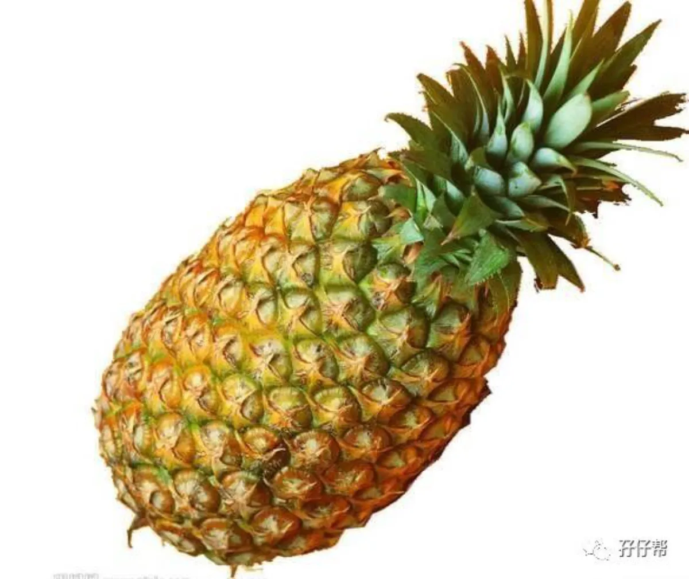
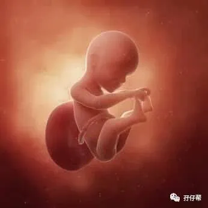
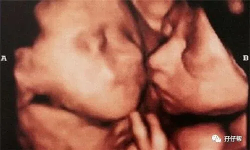
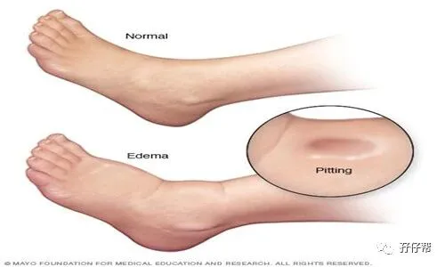

文|圆圈妈 一个文思如尿崩的双胎妈妈
图|来自网络
· 正 · 文 · 来 · 啦 ·
【01】两胎儿的发育情况
孕25周的胎宝宝大概有菠萝那么大了，从头部到臀部长约29.6CM，约540G，如图所示▼：
孕25周的双胞胎胎儿发育图▼：
B超孕25周的双胞胎胎儿影像图▼：
【02】圆圈妈的孕期回忆录
Ⅰ 进入孕25周，开始囤货
NT 通过了，四维大排畸通过了，糖耐通过了，我终于稍微放宽心了。
好像港产片的小商贩给古惑仔老大陈浩南交了保护费似的，雄赳赳的，屌屌的，怕啥，有上头罩着呢。
于是我开始囤货了。
因为不打算喂母乳，果断选了NUK的奶瓶奶嘴。
这个品牌的奶嘴据说是仿真人乳头的，让婴儿在喝奶的时候感觉如同咬住妈妈的乳头一样，亲切自然。
其实都是说得比唱的好听，对于没有喝过一口母乳的小婴儿，哪分得清真假。
但恰恰就是这么一句广告词直戳我痛点，100块一个小小玻璃瓶，号称“一毛不拔的铁公鸡”的我，眼都不眨就付款了。
新生儿的衣服都是婆婆帮忙准备的，婆婆有带小孩子的经验，了解小宝宝的需求，第一次当奶奶，她有一千万个乐意！
我粗人一个，让我从几百上千种衣服中选婴幼儿穿的衣服，我宁愿用粗布把他们包住算了。
有一天下班回家看到阳台上挂满了新生儿的衣服袜子口水巾，每一件，每一样都是小小的，萌萌哒！很暖心！
看到此时此景才惊觉，原来他们不知不觉已经在我腹中呆了6个多月了，很快就要来到我身边！
好期待！好激动！
摸着他们的小衣服就感觉他们已经在我怀里似的。
这种感觉，前所未有！
只有此时此刻才深有体会！
我感觉我此刻除了孕味十足，妈妈的味道也越来越浓了！
非常珍惜与他们合体的机会，虽然我很想早点卸货解脱，可是不得不承认，即便我被折磨得体无完肤，我也是痛并快乐着的！
☞☞TIPS☜☜：据说有些宝妈12周就开始囤货了，这热情也太像一团火了吧！也有宝妈都30周了，还不知道给两宝宝买什么...
这么极端的两极分化真的非双胞胎妈妈莫属了。
建议孕25周，不早也不晚，开始囤货吧。
主要是孕周越来越大，怕早产，来不及准备。
趁着还能走动，附近的超市走走也能HOLD 得住，还能正常坐在电脑边上，喝一口温开水，优哉游哉地选购婴儿车，婴儿床...
Ⅱ 胎动升级了
现在的胎动已经是拳打脚踢，翻云覆雨的级别了。
通常是左边动的多，右边动的少。
但有时候，被医生叫做“F1宝宝”的那个会莫名异常兴奋，可能被挤在下方不好受，想造反，可是空间有限，不敢造次，只能来几个连环踢发泄下。
尤其是睡觉的时候，左侧躺，左边的崽抗议，右边躺，右边的崽抗议，平躺吧，左右两边都在抗议，一起群起而攻…
这个世界上，恐怕只有胎动才能让我如此宽容大量。
被打，被踢，被虐了还能一脸幸福地摸着肚子傻笑，然后大方地张开双手：“来吧！都来踢我吧！”
在不断地被胎动踢打的过程中，大概也摸清了他们的胎动规律。
大都集中在早餐后，晚饭后和睡觉前，中午就不怎么动，偶尔动下，幅度没那么大，估计是想睡午觉，在伸懒腰。
午睡醒后会有一次小幅度的动作，可能是觉得我睡姿不够优雅，压到他们了，不舒服了，抗议了。
Ⅲ 水肿升级了
仿佛一夜之间，我的双脚就长大了，明明昨天还能穿进去的运动鞋，今天就挤不进去了。
我起初以为是自己肉吃多了，脚也跟着长肉了，实际是，足踝处的水肿加重了，没法挤了...
那天，我只能穿着圆圈爸的拖鞋上班！
为了让自己不至于那么邋遢，我在网上买了双男款鞋44码，指望着卸货后给圆圈爸穿，循环利用而不浪费。
虽然现在穿着有点大，但我很自信，就凭我这水肿速度，我那双猪蹄子很快就能突破44码的极限。
☞☞TIPS☜☜：用手指用力压一下脚板，若凹下去的地方没有马上回弹，那就表明你的脚水肿了。
不止出现在脚背上，小腿肚也可能会有，程度因人而异。
若发现水肿了，也不必太惊慌。
双胎的你，你的肾脏和子宫一样超负荷工作着，难免有掉链子的时候。
红豆水和冬瓜汤利尿消肿，但这个因人体质，我喝冬瓜汤有效果，喝红豆水没有效果。
网上收集了些孕期水肿的缓解办法，可以参考下！
不要站或蹲、坐太久，坐在沙发或椅子上时可以把脚抬高，还可以转动踝关节和脚部来增加血液循环。
在休息时左侧卧位就可以缓解子宫对下腔静脉的压迫，适当抬高下肢，以解除妊娠子宫对下腔静脉的压迫。
准妈妈的低蛋白状况也会导致准妈妈下肢浮肿，因此准妈妈要注意摄入足够的蛋白质、维生素，补充铁质与钙质。
适当的低盐饮食，通常每日限用食盐2～4克，以减轻水钠潴留，但低盐饮食的时间不宜过长，以免发生低钠血症。
适当散步，按摩腿部对预防水肿也有效。
在孕期最后一个月，若想喝水每次喝时勿超过500c.c.，且应于睡前1～2小时内喝完，喝完后勿马上入睡，否则隔天起床后容易加重水肿的情况。
Ⅳ 我不能正常上班了
因为肚子巨大，做事情很束缚，我的工作也深受影响。
因工作需要，免不了要去德邦物流点协助物流发货。
孕前，我能像正常男子汉一样，抗着30多斤重的纸箱装货出柜，信手拈来，小菜一碟。
这会儿，我只能像尊佛像一样，让德邦物流经理给我搬来一张贵妃椅，坐在边上看同事们打包。
按老板的意思，大家都没有义务帮我，言下之意，我给大家添麻烦了。
我很惭愧！
我这人最不喜欢麻烦别人了，只允许别人麻烦我，就是不喜欢给别人添麻烦。
有一次，我逞能挺着腹围90CM 的肚子去封箱，不小心被边上正在忙着打包的快递小哥蹭到右边肚子。
我没有事，可把人家给吓惨了，一个劲地说对不起，还要送我上医院去。
我更加惭愧了！
还有一次，非常感动的一幕，安能物流的一小哥，本来发物流只是送到楼下，不包送上楼的。
他看见我一孕妇挺着那么大的肚子，拿着拖车，蹒跚地走来，忍不住问：
“你们公司没男人了吗？”
“男人们都在忙…”
“你快生了吧，我媳妇像你那么大的肚子早躺床上歇了！”
“….”我……呵呵！
“你等会儿，我把车停边上，帮你送上去。”
“.…谢谢！”我,,,,,感动极了！
为避免节外生枝，为了不麻烦那些好心人，在端午节假期来临之际，我向老板申请了提前休产假。
也罢！
我再也不想看到司机大叔看到我上车之后那惶恐的表情，
不想麻烦那些快递小哥被我指挥着把货物摆这放那，
不想过马路的时候被那些急躁的老司机狂按喇叭，
不想被好心的大妈们千叮万嘱…
怀孕后，让我更加觉得这个社会真美好，我们大深圳的市民们都非常有素质，很多看似小小的善意之举都能轻易地让我感动到想哭。
我对里面那两只崽说：“看到没有，那么多不相识的好心人为你们的平安出生保驾护航，你们一定要争气哦！长大后也要成为一个善良有爱心的人！”
☞未完待续☜
上期推文:
连载（一）|圆圈妈双胞胎怀孕过程第4周
连载（二）|圆圈妈双胞胎怀孕过程第5周
连载（三）|圆圈妈双胞胎怀孕过程第6周
连载（四）|圆圈妈双胞胎怀孕过程第7周
连载（五）|圆圈妈双胞胎怀孕过程第8周
连载（六）|圆圈妈双胞胎怀孕过程第9周
连载（七）|圆圈妈双胞胎怀孕过程第10周
连载（八）|圆圈妈双胞胎怀孕过程第11周
连载（九）|圆圈妈双胞胎怀孕过程第12周
连载（十）|圆圈妈双胞胎怀孕过程第13周
连载（十一）|圆圈妈双胞胎怀孕过程第14周
连载（十二）|圆圈妈双胞胎怀孕过程第15周
连载（十三）|圆圈妈双胞胎怀孕过程第16周
连载（十四）|圆圈妈双胞胎怀孕过程第17周
连载（十五）|圆圈妈双胞胎怀孕过程第18周
连载（十六）|圆圈妈双胞胎怀孕过程第19周
连载（十七）|圆圈妈双胞胎怀孕过程第20周
连载（十八）|圆圈妈双胞胎怀孕过程第21周
连载（十九）|圆圈妈双胞胎怀孕过程第22周
连载（二十）|圆圈妈双胞胎怀孕过程第23周
连载（二十一）|圆圈妈双胞胎怀孕过程第24周
下期预告：
连载（二十三）|圆圈妈双胞胎怀孕过程第26周
-END-
重磅互动
#你希望写什么育儿经验干货？#
评论区聊一聊
随便提，万一下篇就写了呢？
关于这个号
谢谢关注！
我是圆圈妈
85后，全职妈妈
家有孖仔两枚，圆圈&圈圈
双胞胎育儿公众号：孖仔帮
ID:twinsbang
旨意分享双胞胎育儿经验帮助双胞胎家庭
有经验可循
有组织可靠
希望我的经验对您有所启发
期待与您一起共享双胞胎育儿经
孖仔帮目前有5个双胞胎微信社群
孕期群，喂养群，闲置群
爸爸群，教育群
如需入交流群
添加微信号sgguy-com
或扫描下方二维码⬇⬇
申请入群
入群暗号：双胎宝妈/宝爸，孕期/已生
往期回顾
105：同卵双胞胎的天敌--双胞胎输血综合征
106：官宣：双绒双羊，单绒双羊，单绒单羊傻傻分不清？一篇消除你所有疑问
215：双胎子宫日记系列|（下）你看不看？双胞胎妈妈直播剖腹产全过程
306：真人示范！双胞胎妈妈高难度喂母乳技巧
312：为出生就进NICU的双胞胎新生儿，我必须告诉你这5个通关秘籍
407：嘿！双胞胎孩子的亲子阅读攻略，要来一份吗（1--2岁阶段）
605：看过这份最简单的双胞胎宝宝用品囤货清单，其他的都是将就
608：听说...你在找双胞胎育儿神器，这事儿我熟！
723：双胎妈妈，为什么我不建议你这样坐月子...
⬇⬇长按下方二维码，关注孖仔帮
回复文章编号数字即可阅读
更多养育双胞胎知识，尽在双胞胎育儿网站
请猛戳 "阅读原文"
或长按下方二维码直达⬇⬇
点击“阅读全文”，直达双胞胎育儿网站



